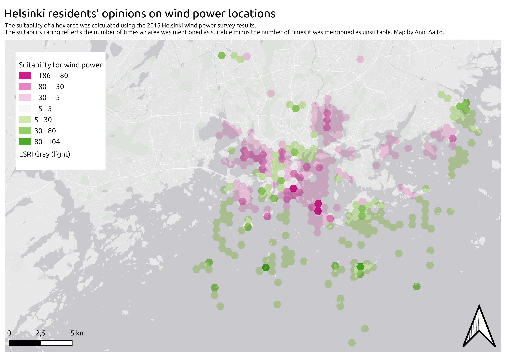
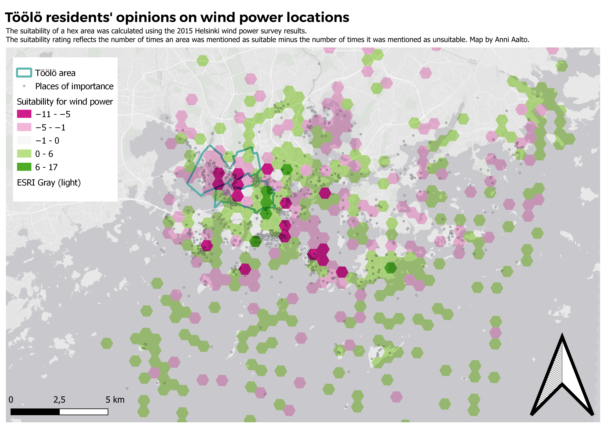
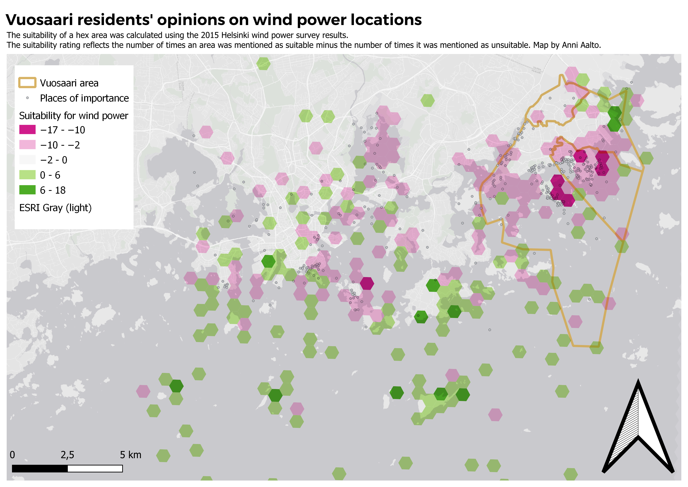

Analysis of geographical survey data
This analysis uses data from an open map-based survey on the acceptability of wind power in Helsinki. The respondees were asked to place on a map locations they found suitable or unsuitable for wind power construction, as well as sites that are of particular importance to their lives. There were nearly 2500 responses in total.
The first map shows an overview of all responses, with suitable locations for wind power marked in green and unsuitable locations in red. The point data has been analysed by creating a 500 m x 500 m hexagon grid over the map area and counting the number of suitable and unsuitable points within each hexagon. A suitability rating for each hexagon has been calculated based on the counts of suitable and unsuitable points. The colour of each hexagon indicates the overall sentiment towards wind power in that area, with greener hexagons indicating more suitability and redder hexagons indicating unsuitability.
The second and third maps analyse a subsection of the answers. The second map shows the answers of Töölö residents and the third map the answers of Vuosaari residents. In addition to the overall sentiment hexagons, these maps also show the locations marked as important by the residents of each area.
 For both areas it is evident that there is some tendency towards not wanting wind power to be built near their own neighborhood. In both maps there is a concentration of negative sentiment near or at the responders' home location. Though it should be noted that both maps also depict small areas of positive sentiment towards wind power, suggesting that residents are not completely intolerant to wind power construction on their own home turf.
A similar sentiment is seen with important places. Particularly for Vuosaari residents, important places tend to coincide with negative sentiment towards wind power. This is not quite so clear in the Töölö map, where important places tend to coincide with both negative and positive sentiment areas. One could theorise that perhaps Töölö residents have a more lenient attitude towards seeing wind power turbines in their favorite costal areas.
In all three maps the areas that are deemed most suitable for wind power are towards the outer edges of the city. Notably, a lot of these places are outside their home locations, many of them are on sea areas and on islands that have few or no residents.
Sources
The data is based on a wind power survey for Helsinki, carried out in 2015. Details on the survey and the data can be found in the Helsinki region infoshare service: Wind Power Survey for Helsinki 2015.